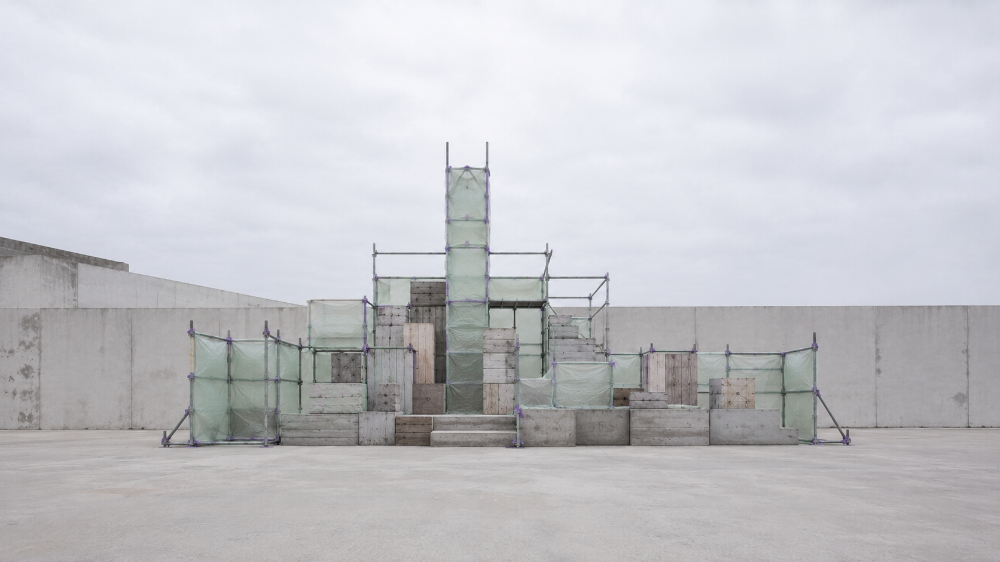
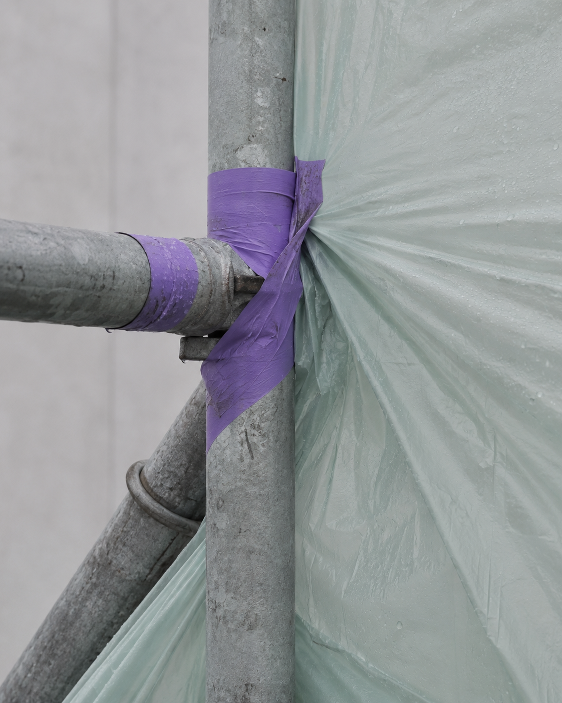
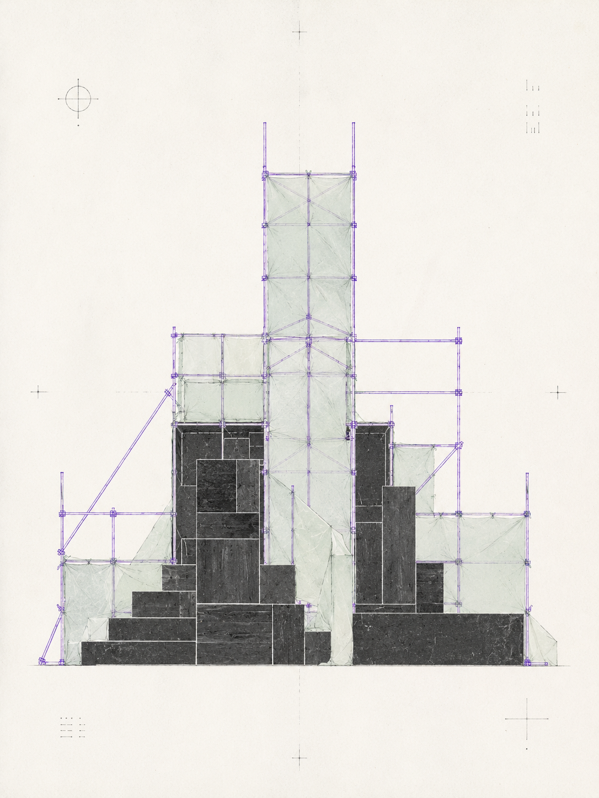
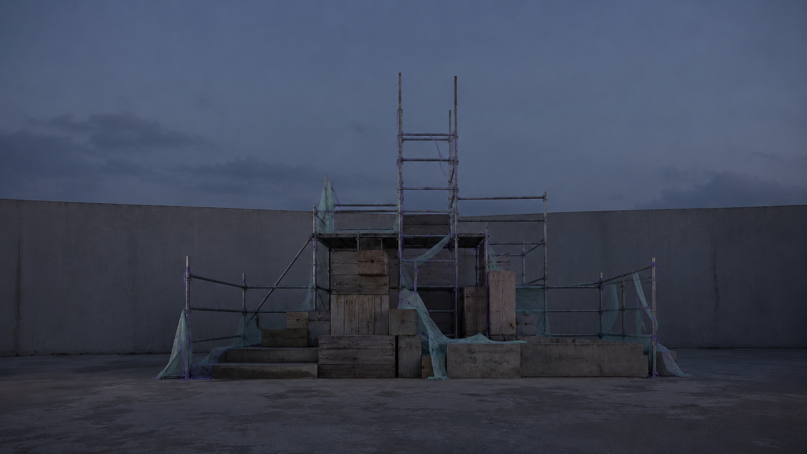

视觉方法 / PROCESS
通过拆分、重组与时间顺序图，分析各类构件如何形成短暂而稳定的关系。
A10 · FIELD NOTES
临时纪念碑
记录城市临时构筑物如何在消失前短暂成为无名公共雕塑。

“A10 TEMPORARY MONUMENT｜临时纪念碑”记录城市中由路障、警示胶带、脚手架、塑料布和临时堆放物构成的短命结构。项目通过现场拍摄、位置标记、材料分类与版面编排，将这些偶然形成的组合整理为可比较的观察档案。最终视觉以图像序列、局部放大、结构拆解和现场关系图呈现，讨论无名公共物如何在被使用、忽视与拆除之间，短暂获得类似纪念碑的形态与观看方式。
通过拆分、重组与时间顺序图，分析各类构件如何形成短暂而稳定的关系。
一开始是留意与那些通常被视为障碍物的东西。它们通常没有设计者署名，也不会长期保留，却在特定位置形成明确的体量、边界和观看方向。用相机、草图和简短记录保存它们，并尽量不预设意义，只比较材料、摆放、传播方式与消失速度。



